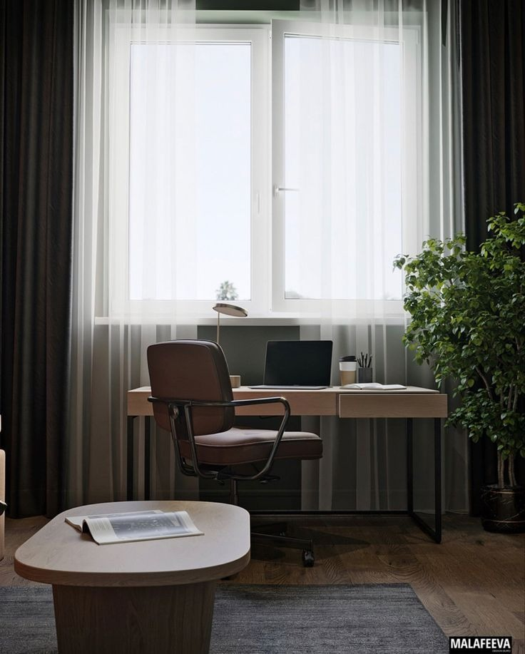
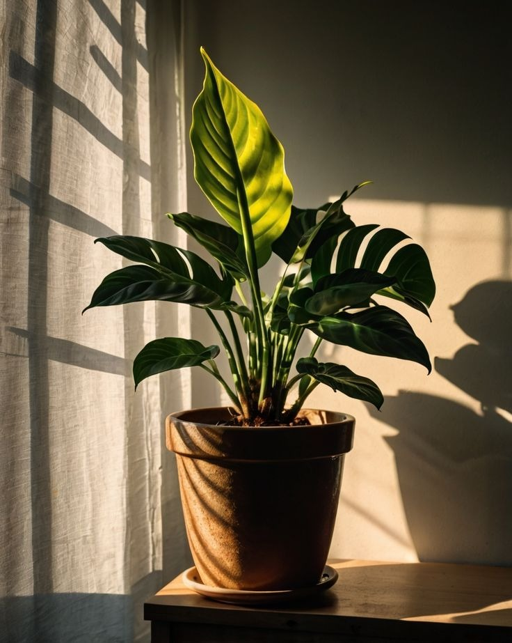

Eksklusif untuk Mahasiswa
Sistem pakar berbasis PSS-10 membantu Anda mengidentifikasi beban pikiran secara ilmiah dan rahasia. Hadapi tantangan akademik dengan ketenangan yang terukur.

Terverifikasi Berdasarkan Perceived Stress Scale (PSS-10)
Instrumen yang diakui secara global untuk mengukur persepsi stres dalam kehidupan sehari-hari dengan akurasi tinggi.
Data Anda sepenuhnya anonim. Kami percaya bahwa rasa aman adalah langkah pertama menuju kesejahteraan mental.
Hanya 10 pertanyaan sederhana untuk memberikan gambaran kondisi Anda.

Refleksikan perasaan dan pikiran Anda selama satu bulan terakhir melalui kuesioner interaktif kami.
Sistem pakar kami akan menganalisis skor Anda dan menentukan tingkat stres yang Anda alami secara akurat.
Terima saran praktis dan referensi bantuan profesional yang disesuaikan dengan hasil tes Anda.
"Sistem ini bukan untuk melabeli Anda, melainkan untuk memberikan cermin yang jujur. Hasil tes hanya digunakan untuk pertumbuhan pribadi Anda dan tidak akan dibagikan kepada institusi atau pihak ketiga mana pun."
Tidak apa-apa. Anda bisa mulai dengan membaca sumber daya edukasi kami tentang manajemen stres dan kesejahteraan mental mahasiswa.
Jelajahi Edukasi